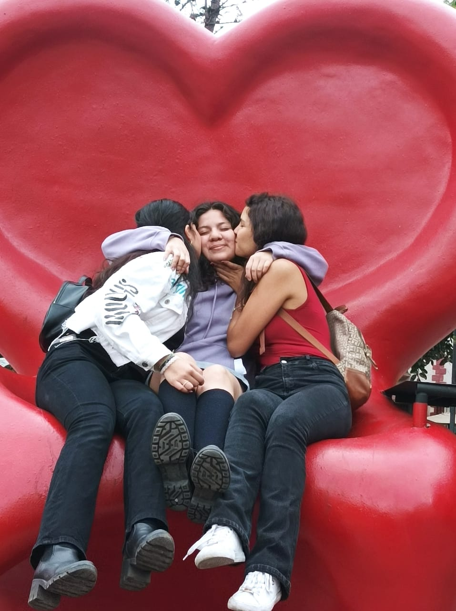

A continuación...
Lo que la vida me robó
Mi nombre es Judith Paulina Méndez Olvera, casi todos me dicen "Jud", nací el 12 de febrero del 2006, por lo tanto tengo 18 años, nací en Querétaro, Qro.
Crecí con mis padres y mi hermano mayor Adrián. Cuando era pequeña (4 años aproximadamente) comencé a ser un poco independiente ya que la mayor paerte del día me la pasaba sola en casa ya que mi mamá trabajaba
en una fabrica de 7:00am a 5:00pm y mi papá de 12:pm a 9:00pm, al igual que mi hermano asistía a la primaria de 2:00pm a 6:00pm. En ese tiempo apréndí a sobrevivir sola,
haciendo algo sencillo de comer como unas quesadillas.
Cuando llegaba mi hermano de la escuela jugaba horas y horas en el xbox hasta que llegara mi mamá y hacer nuestros deberes,
a los 5 años de edad mis padres decidieron cambiarse de casa y es donde vivo actualmente "La pradera".
Cuando llegamos a esa casa, hice mis amigos en seguida ya que me considero una persona social y buena para convivir aunque a veces tengo mi caracter.
Cuando llegué a mi nueva casa nada cambió, aún seguía estando sola en casa hasta que me inscribí a la primaria y mi hermano en la secundaria donde
él iba en las mañanas y yo en las tardes de 2:00pm y así toda mi primaria, sin embargo en nuestros ratos juntos él me cuidaba,
él era quien me daba de comer, quien me ayudaba con mis tareas, quien jugaba conmigo, etc.
No digo que mis padres sean malos padres, solo que jamás tenían tiempo y cuando lo tenían disfrutabamos los buenos momentos,
mi infancia estuvo llena de travesuras y de regaños por lo cual me he acostumbradoa que me llamen la atención.
Cuando inicé la secundaria todo iba bien, buenas calificaciónes, buenos amigos, una bella relación con mis padres, etc. Pero despues de la pandemia de covid-19, todo cambió.
Cambió totalmente mi manera de pensar, mi forma de ser, mis amistades, conocí lo que es "la ignorancia". Fue un cambio demasiado brusco que generó bastantes discusiones con mis papás.
Tal vez lo que sucedió fue que era una adolescente toda mensa que quería aparentar ser grande. A los 16 años tuve casi de todos los problemas, malas calificaciones,
mal caracter, malos habitos, malas amistades, todo mal. No culpo a mis amigos por hacerme una persona así, si no que me culpo a mi misma por ser así, por no tener un criterio propio
y por justificar mis malas decisiones.
Despues de mi etapa rebelde y desfigurada, alejé a las personas que no me sumaban en mi vida y conocí a buenas personas que ahora las consideros mis mejores amigas
